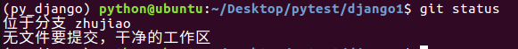
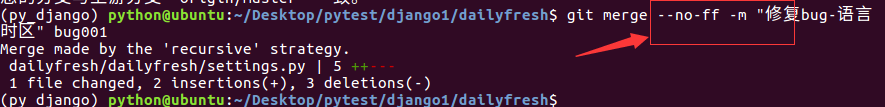
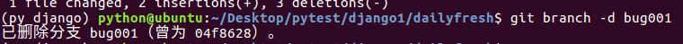
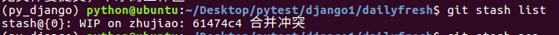
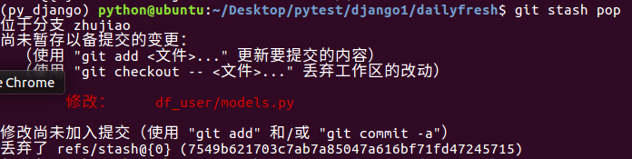
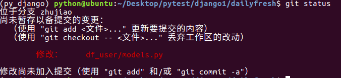

Debug分支
- 在项目的正常开发过程中，之前发布过的版本可能很会出bug，这时就需要停下来现在的开发任务，先去修改bug，完成后再回来继续开发任务
- git中stash提供了保存现场的功能，可以把当前工作区、暂存区中的内容不需要提交而保存下来，转而去做bug修复，完成后再恢复现场，继续开发工作
- 示例如下：停止当前工作，修复master分支下的一个bug，为修改dailyfresh/settings.py文件
- 语言和时区的原内容为
LANGUAGE_CODE = 'en-us'
TIME_ZONE = 'UTC'
- 将语言和时区改为
LANGUAGE_CODE = 'zh-Hans'
TIME_ZONE = 'Shanghai/Asia'
- 1.查看当前状态
git status

- 2.保存现场
git stash

- 再查看当前状态，发现是干净的
git status
- 3.切换到master分支
git checkout master
- 4.新建临时分支用于修复bug，用完后会删除此分支
git checkout -b bug001
- 5.按照上面的设计，修改dailyfresh/settings.py文件的语言和时区如下
LANGUAGE_CODE = 'zh-Hans'
TIME_ZONE = 'Shanghai/Asia'
- 添加：将工作区中的更改添加到暂存区
- 注意：当前目录为manage.py文件所在目录
(py_django) python@ubuntu:~/Desktop/pytest/django1/dailyfresh$ git add dailyfresh/settings.py
- 提交：将暂存区的内容提交到仓库区
git commit -m '修复时区语言'
- 6.切换回master分支
git checkout master
- 7.将bug001分支合并到master分支
- 因为临时分支用完后会被删除，无法通过分支查询历史记录，所以使用临时分支时需要使用no-ff的方式，同时写上-m备注信息
git merge --no-ff -m "修复bug-语言时区" bug001

- 推送到服务器
git push
- 8.删除临时分支bug001
git branch -d bug001

- 9.切换回工作分支zhujiao
git checkout zhujiao
- 查看现场列表
git stash list

- 恢复现场
git stash pop

- 恢复现场后查看工作状态
git status

- 接下来可以在这个分支继续开发